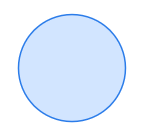
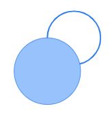
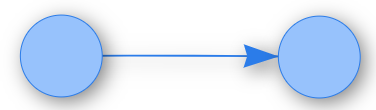
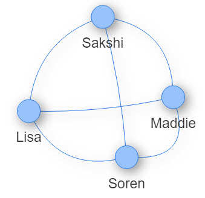

8 Graph databases
8.1 Learning objectives
Concepts
- Graphs (Networks)
- Nodes
- Edges
- Attributes
Practical skills
- Creating a network data set
- Visualizing a network
8.2 Graph databases
In graph databases, the data is stored as collections of edges, nodes to which we assign properties, and the priority is on the relationship between the different data elements. They are used to visualize data in graphs (networks)and are thus particularly useful to explore how people, processes, and objects are interrelated.
Ontologies, which we will introduce in the next chapter, are essentially a form of graph with a semantic layer and a bunch of rules that formalize the types of entities and relationships that exist within a knowledge domain. For now, let us simply look at the most basic components that are found in every single graph: nodes, edges,and attributes.
8.2.1 Nodes
Nodes are simply entities of some kind, such as people, products, processes, event, concepts, etc. Depending on the purpose of the graph and the available data, nodes can be practically anything.
This is a node :

A graph that represents a single kind of entity (e.g., students) is called unimodal, and one representing different kinds of things (e.g., students and courses) is called multimodal.
8.2.2 Edges
And edge is a relationship that exists between two nodes. Like nodes, depending on the purpose of the graph, the edges can represent anything. An edge must have two nodes.
This is an edge:

Note that an edge can relate a node to itself (that’s called a self-loop):

There are two types of edges: directed and undirected . The directed edge indicates that the relationship has a direction (e.g., I like ice cream, but ice cream doesn’t like me back):

The undirected edge represent associations and co-occurences. For instance, we could form an undirected edge between two students (node) that are taking the same course:
Note: While the direction of the edges is an attribute of nodes, the undirected and directed attributes are usually not used in combination in the same graph, so we will most often refer to an undirected or directed graphs.
8.2.3 Attributes
Nodes and edges can have attributes that can be used to manipulate their appearance in the graph (e.g., size, shape, color, label). Here is a network where the nodes have label:

8.3 Creating a network dataset
8.3.1 Edges list
The most basic form of network can be constructed from a simple table of edges with two columns.
Here is an example:
| From | To |
|---|---|
| Student A | Student B |
| Student A | Student C |
| Student B | Student C |
| Student C | Student D |
Note: There is no standard for the names of your columns. Some network analysis or visualization tools will use from and to, some will use source and target, and some others my not require headers at all. Please also note that if you are building an undirected graph, you only need to include the relationship between A and B once. In other words, once the relationship between Student A and Student B has been entered, there is no need to add another row to indicate that Student B is also related to Student A.
8.3.1.1 Adding attributes
The most common attribute to provide for your edges are a weight representing the strength of the relationship between two nodes. For instance if you have a directed network representing email sent from people to other people, then the weight could be the number of emails sent by the person in the from column to the person in the To column. Like this:
| From | To | Weight |
|---|---|---|
| Student A | Student B | 15 |
| Student A | Student C | 4 |
| Student B | Student C | 542 |
| Student C | Student D | 5 |
We can also indicate whether the relationship is directed or undirected, and also add a label for the edge. Like this
| From | To | Weight | Type | Label |
|---|---|---|---|---|
| Student A | Student B | 15 | directed | emailed |
| Student A | Student C | 4 | directed | emailed |
| Student B | Student C | 542 | directed | emailed |
| Student C | Student D | 5 | directed | emailed |
8.3.2 Nodes list
In the table above the students are nodes and the from and to columns contain the student IDs. The nodes lists is simply a list of all the students in the networks, along with any number of attributes. The only mandatory column in a nodes list is usually the ID column, and the most common attribute is a label which is required to display a label for the node when visualizing the graph. Categorical attributes are typically used to color the nodes, and numerical attributes are typically used for node size. Here’s an example:
| id | label | program | emails_written |
|---|---|---|---|
| Student A | Student A | MI | 19 |
| Student B | Student B | MBA | 542 |
| Student C | Student C | MREM | 5 |
| Student D | Student D | MI | 0 |
8.4 Exercises
This is a simple exercise in which you will create a simple edge list (only from and to columns) using a template, and use a super fancy application developed by your instructor to visualize your network.
- Download the following Excel template and add data to build a unimodal graph, which can be directed or undirected (but not both).
- Use this web application developed specially for this exercise to visualize and play around with your network.
8.5 Additional resources
Gephi (www.gephi.org) is an open source network analysis software that you can use to build, visualize and analyze networks of different complexity levels and sizes. It has a tiny bit of a learning curve, but it has the advantage of being free and able to support various kinds of network related tasks.
The edges list for Gephi should include the a source column and a target columns (equivalent to From and To in the example above).
The nodes list for Gephi is not mandatory (nodes will be created automatically if you import an edge list). If you do import your own nodes list, the advantage is that you can include as many attributes as you’d like, and use them to filter, size or color your nodes if you wish. The only mandatory column is id (this is what the Source and Target columns contain).